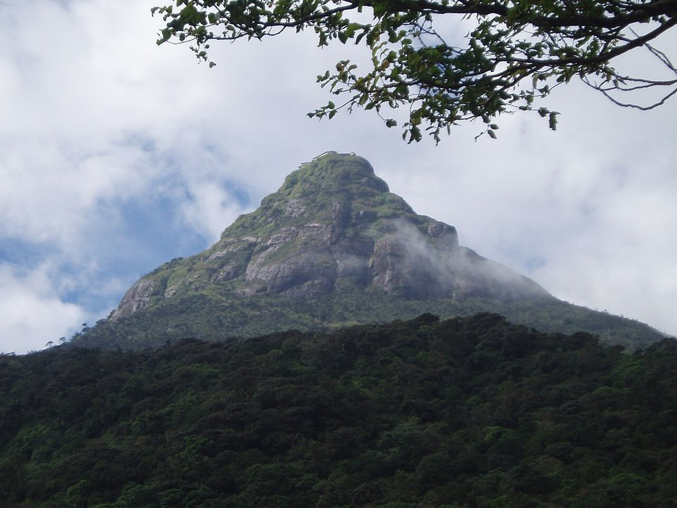
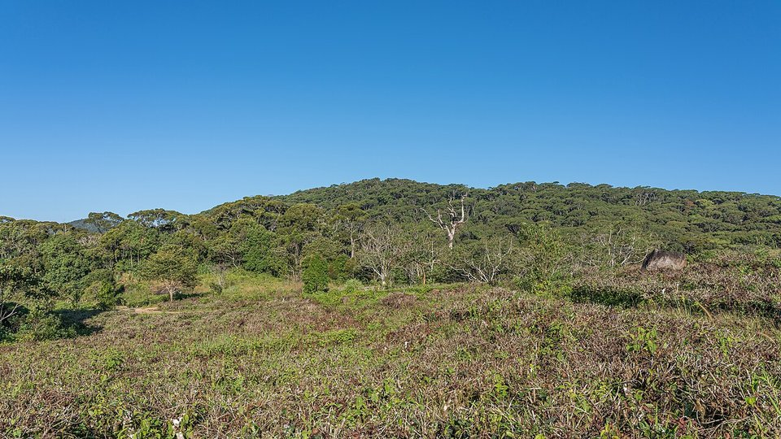
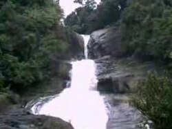
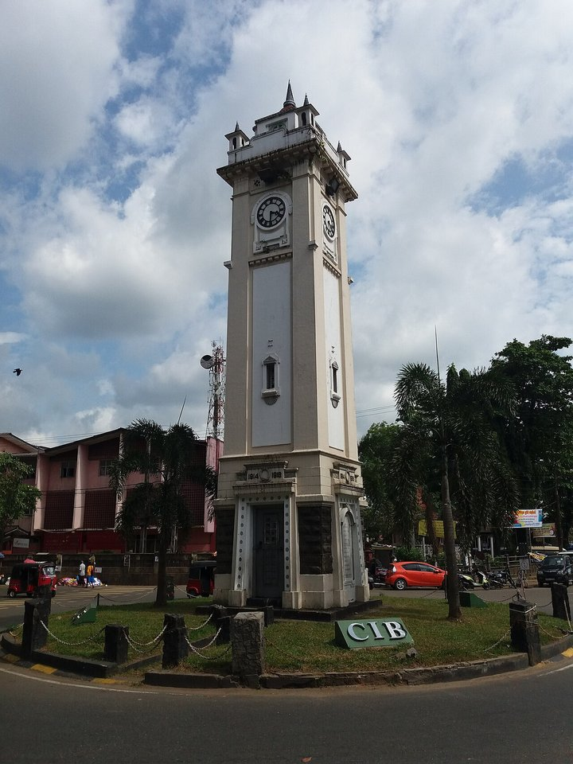
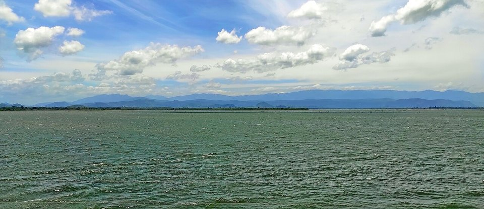
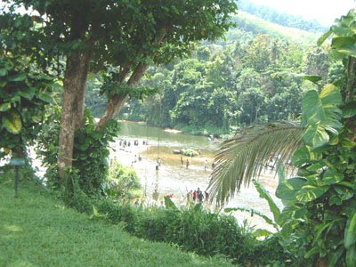

Top Destinations in Sabaragamuwa Province
Discover the signature highlights and attractions across this province.

Mountains & HighlandsAdam's Peak (Sri Pada / Sacred Footprint Mountain)
The sacred 2,243-meter pyramid mountain venerated by four world religions for the holy footprint atop its summit, famous for its midnight pilgrimage and mystical sunrise shadow.

Forests & Nature ReservesSinharaja Forest Reserve (UNESCO Biosphere)
The last viable expanse of virgin tropical lowland rainforest in Sri Lanka, a UNESCO World Heritage biodiversity treasure where over 60% of trees and 95% of birds are endemic.

WaterfallsBopath Ella Bo-Leaf Waterfall
A picturesque 30-meter waterfall that cascades through a narrow rocky cleft and widens into the distinctive shape of a sacred Bo leaf (Ficus religiosa).

Cultural ExperiencesRatnapura City of Gems & Traditional Mines
The world's premier gem trading capital, where traditional bamboo-shored pit mines unearth the world's finest royal blue sapphires, rubies, and alexandrites.

Wildlife & SafariUdawalawe National Park & Elephant Transit Home
Sri Lanka's premier elephant sanctuary where wild herds are guaranteed on every safari, alongside the world-renowned Elephant Transit Home (ETH) rehabilitation center.
 Wildlife & Safari
Wildlife & Safari
Pinnawala Elephant Orphanage & River Bath
The world-famous captive elephant sanctuary founded in 1975, where visitors watch a herd of up to 80 Asian elephants bathe together in the Maha Oya river.

Adventure TourismKitulgala White Water Rafting & Kelani Rainforest
Sri Lanka's adrenaline adventure capital on the rushing Kelani River, famed for Grade II-IV white-water rafting, canyoning, and filming location of 'The Bridge on the River Kwai'.